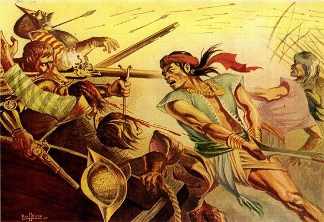

Year 1986The People Power Revolution | |
 |
March 16, 1521 From February 22 to 25, 1986, a massive gathering of Filipinos along Epifanio de los Santos Avenue protested against President Ferdinand Marcos, who claimed re-election against Corazon Aquino. This People Power Revolution ultimately forced Marcos and his family to flee the Philippines, sparking hope for reforms to address the economic and social issues worsened during his 20-year rule. |
| March 31, 1521 Marcos, in power since 1965, declared martial law in 1972, curtailing civil liberties and centralizing authority. His regime was marked by the arrest, torture, and disappearance of thousands of dissenters. The assassination of Senator Benigno Aquino, Jr. in 1983 intensified international outrage, and concerns about Marcos's declining health led many to consider potential successors. | |
| April 27, 1521 In 1985, Marcos announced a "snap election," leaving opponents uncertain if it was a genuine opportunity or a trap, as he had a history of manipulating elections through violence and intimidation. Many in the Philippine Left chose to boycott the election, fearing their participation would be futile. | |